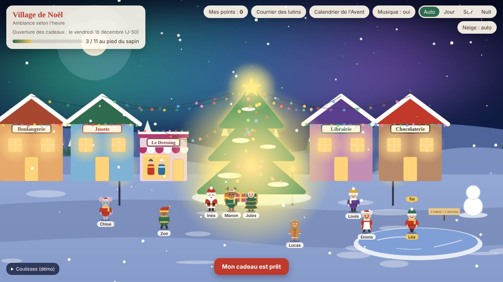
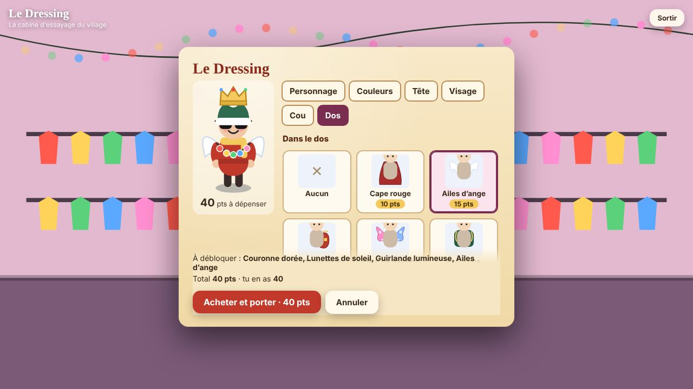

Accueil › Jeu de Noël en équipe
Un jeu de Noël en équipe qui dure jusqu’au jour J
Les animations de Noël classiques tiennent sur une heure, un jour, un événement. Ce jeu fonctionne autrement : il s’étale sur plusieurs semaines, par petites touches de deux à cinq minutes, et il ne demande aucune réunion obligatoire.

Ce que fait le jeu
| Moment | Ce qui se passe |
|---|---|
| Chaque jour | Une porte du calendrier de l’Avent s’ouvre : devinette, anecdote ou défi photo. |
| Quand on a deux minutes | Patinoire, jeu des paires, chocolat chaud parfait, atelier de biscuits à offrir. |
| Au fil de l’eau | Boules de neige, mots doux et biscuits envoyés aux collègues, en nombre limité pour garder le plaisir. |
| Le jour J | Ouverture des cadeaux du Secret Santa, à l’heure choisie par l’organisateur. |
Pourquoi ça fonctionne en équipe
- Pas de réunion en plus. Chacun joue à son rythme, quand il le souhaite.
- Des points qui se partagent. Les actions de chacun alimentent un classement et une barre de progression de l’équipe, sans pression individuelle.
- Un personnage à soi. Chaque joueur choisit son bonhomme et le personnalise au Dressing avec ses points.
- Un suivi pour l’organisateur. Qui a répondu, combien de points, combien de temps passé : de quoi mesurer l’adhésion sans enquête.
Pour qui ?
Équipes en télétravail ou hybrides, services qui veulent un temps fort de fin d’année sans mobiliser une salle, associations, familles dispersées et groupes d’amis.
Ce jeu ne remplace pas un vrai moment ensemble : il le prépare et l’entretient.

Combien de temps pour l’organiser ?
Comptez une dizaine de minutes : ajouter les prénoms, fixer la date et le budget, puis envoyer les liens. Le reste se fait tout seul.
Prêt à essayer ?
La démo se joue directement dans le navigateur, avec des prénoms fictifs. Rien à installer, aucun compte à créer.